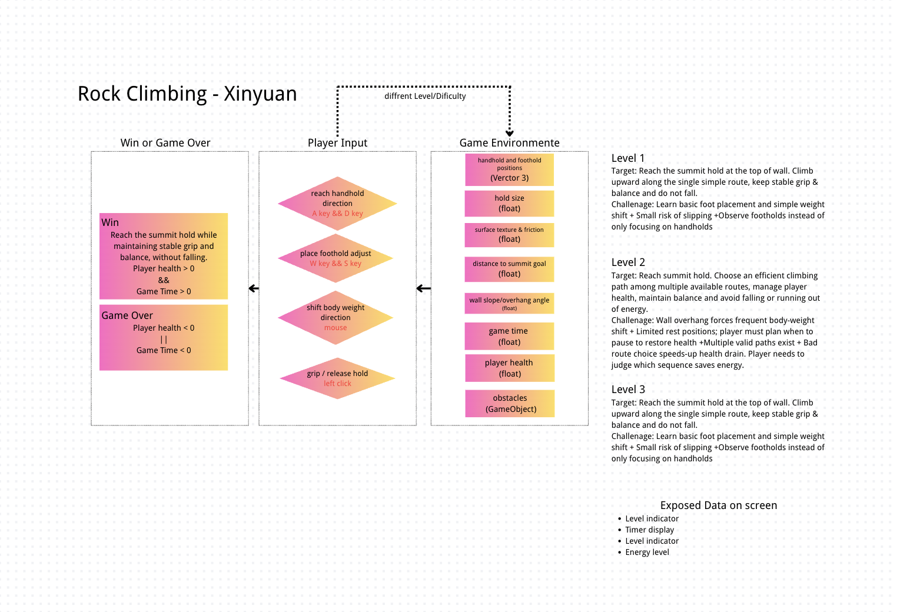

Game Design from Everyday Life · First Playable
Climbing is not arm strength.
It is feet, balance and planning.
A first-person indoor climbing game built from a domain I actually climb in. You do not pull yourself up the wall — you decide where your weight goes, and the wall tells you whether that decision was any good.
Designer statement
Why this domain
"I have tried indoor rock‑climbing several times. I found that climbing is not just about arm strength. It demands careful foot placement, body balance and route planning to finish a wall." — Xinyuan Wang, project brief, Section 2
The game exists to make that realisation happen inside a player's hands rather than in a paragraph of advice. Everything below follows the exported development brief, which is the specification for this project.
Game idea
What the game is
Player goal
Reach the summit hold. That is the whole stated objective — quoted from the brief: "Reach the summit hold while maintaining stable grip and balance, without falling."
Core learning shift
"Beginners think climbing means pulling yourself upward with arm strength. Experts know climbing means understanding the relationship among footholds, weight and energy, and movement sequences to move efficiently."
Core mechanic
Grip – weight – balance. Every choice you make redistributes your weight across four points of contact, and every contact has a limit.
Why first-person, why 3D
The brief specifies first-person so you must judge reach distance and hold condition directly, and 3D so that wall depth, hold geometry and the lean of an overhang are actually visible.
Domain knowledge
The gap between novice and expert
Novice misconception
"Beginners think climbing success mainly depends on strong arm and upper‑body strength."
In practice they "pull upward with their arms too hard, ignore available footholds, lean their body too far away from the wall, or rush movements without planning ahead."
Most important domain challenge
"The relationship between energy management, body positioning, body weight distribution and route‑sequence planning."
System design
System graph and data model

Environment data
"Handhold and foothold positions, hold size and texture, body distance from the wall, remaining energy, possible movement paths, and distance to the top goal."
Player-controlled data
"Reach for handholds, place feet on footholds, shift body weight and direction, pause to rest, choose a climbing sequence, and adjust balance."
System-calculated results
"The climber moves smoothly or lags, hands slip off holds, body becomes out‑of‑balance, energy drains quickly."
Important states
"Secure / slipping grip, balanced / off‑balanced body, rested / exhausted climber, reachable / out‑of‑reach hold, safe / fall‑prone position, firm / loose foothold."
Feedback translation
| Invisible state | Meaning given to the player | Channels |
|---|---|---|
| Hands slipping | "the handhold is poor and smooth" | Trembling hand mesh, red grip bar, creaking sound, then the hold lets go |
| Body trembling | "he/she is nearly exhausted" | Limb tremor, swaying camera, heavy breathing audio whose rate tracks exhaustion |
| Body sway | "balance is lost or unstable" | Camera roll and sway, soft shifting-body sound, balance meter |
| Load on the arms | How much weight your feet are failing to carry | "Weight on arms" meter plus the energy drain it causes |
Success and failure
Success
Reach the summit hold with a hand while still attached to the wall.
Failure
Both hands come off (you fall) · energy reaches zero (you pump out) · the route clock runs out.
Challenge space
Three presets that differ by variable
Each preset changes system variables, not decoration. Values below are the ones actually used in the build.
| Challenge | Wall angle | Hold friction | Hold size | Routes | What it forces you to learn |
|---|---|---|---|---|---|
| 1 · Gentle Warm-up Wall shallow slope + large grippy holds |
8° | 0.84 – 0.97 | 1.15 – 1.50 | Single line | Climb the simple upward path; notice your feet carrying you |
| 2 · Steep Slab Climb moderate overhang + mixed-size holds |
21° | 0.52 – 0.88 | 0.72 – 1.34 | Multiple branches | Route selection and stamina management |
| 3 · Slippery Climb heavy overhang + sparse slippery holds |
34° | 0.32 – 0.62 | 0.48 – 0.92 | Sparse single line | Reach judgement and risk-taking on few secure grips |
Verification
Proving the routes can actually be climbed
A climbable-looking wall is not the same as a climbable wall. Every route is checked by a headless harness that imports the same simulation modules the browser runs and climbs each route twice: once with good technique, once with the beginner habit the game exists to correct.
| Challenge | Good technique | Beginner habit |
|---|---|---|
| 1 · Gentle Warm-up Wall | Tops out · 26 moves · 26 s · 74% energy left | Tops out · 30% energy left — the wall forgives, as intended |
| 2 · Steep Slab Climb | Tops out · 30 moves · 56 s · 88% energy left | Falls at 7.3 m |
| 3 · Slippery Climb | Tops out · 32 moves · 89 s · 77% energy left | Falls at 1.4 m |
Current milestone
What exists right now
Milestone 1 is live. The build contains one complete observe → judge → act → feedback → adjust loop and all three challenge presets. The graphics are deliberately plain: holds are simple geometry with a procedural concrete texture, and all audio is synthesised at runtime so nothing is fetched from a remote service.
- Four independently controllable limbs on handholds and footholds
- Live load split between feet and hands, driven by hip distance and wall angle
- Per-contact grip demand versus capacity, with a warning band before failure
- Balance from centre of mass against the support span
- Energy drain from arm loading, recoverable only by resting on your feet
Not yet implemented: realistic texture scanning, richer animation, further coding of the climbing feel, and the full visual polish described in the brief. These are recorded as open work in the development log rather than claimed here.